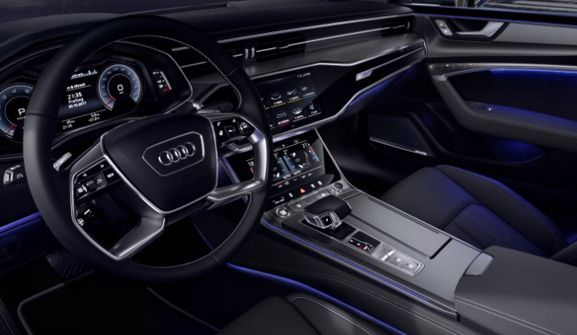

Audi A7 Sportback
Kom langs voor uw gratis proefrit.
- Paketten
- Motoren
- Exterieur
- Interieur
- Uitrusting
- Accessoires
- Gallerij
- Contact
Menu
Interieur
Prettig, royaal, ruimtelijk
Wij zijn genereus omgegaan met ruimte. Met nog meer comfort en bewegingsvrijheid achterin, zonder gevolgen voor de kofferbak. Met optionele stoelverwarming vóór en achter en vooral met exacte en hoogwaardige afwerking die vakmanschap verraadt.
Toon uw eigen stijl

De optionele, in diverse kleuren instelbare contour- en ambienteverlichting maakt het interieur een podium voor uw eigen inzichten. Lichtgeleiders accentueren interieurvormen, benadrukken het dashboard en designstructuren.